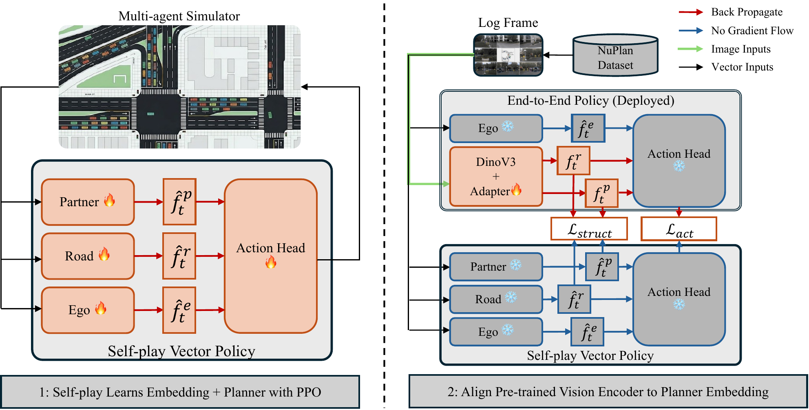
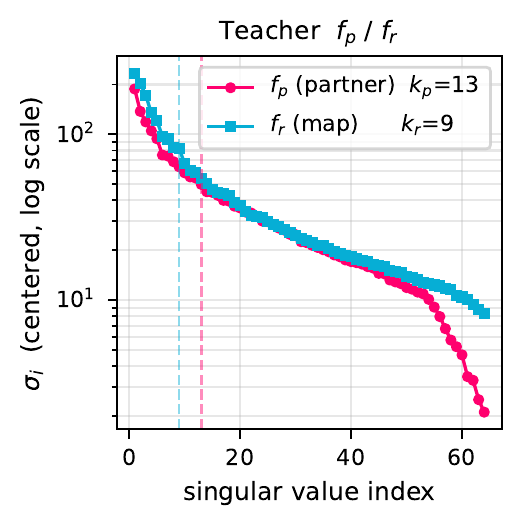

End-to-end autonomous driving has achieved state-of-the-art performance on benchmarks and real-world deployments. Its standard training recipe, however, is expensive across all stages: collecting and labeling millions of driving frames is costly, and closed-loop RL on images is bottlenecked by the per-step cost of photorealistic rendering plus a forward pass through a large vision backbone. Self-play in vectorized simulators changes the economics: millions of rollout steps per second, and a state distribution naturally rich in collisions, near-misses, and recoveries that no driving log contains.
Our approach exploits this asymmetry by decoupling learning to drive from learning to see. We pretrain a single policy by self-play, then align its latent space with a pretrained vision backbone, through the action KL divergence and a batch-relational low-rank structural loss. The action target comes from the self-play policy, so alignment never supervises against a logged trajectory: a paired dataset of (image, scene-state) frames suffices, with no need for the curated expert demonstrations that imitation pretraining is built on. On photorealistic 3D Gaussian splatting closed-loop scenarios, the resulting end-to-end policy matches or exceeds prior end-to-end methods.

Two-phase training pipeline. Flame icons mark trainable modules, snowflakes mark frozen ones; red arrows carry gradients, blue arrows do not.
Phase 1 — Learn to drive (self-play). A single policy is trained end-to-end with PPO by multi-agent self-play in TerraZero, our vectorized simulator. One shared parameter set controls every agent in the scene, so the interaction distribution — collisions, near-misses, recoveries — co-evolves with the policy. Ego, map, and partner encoders feed a shared trunk and an action head; per-episode reward weights are sampled and exposed to the policy, yielding a single agent that spans a continuum of driving preferences.
Phase 2 — Learn to see (vision alignment). The Phase-1 policy is frozen and used purely as a source of per-frame supervision. For each log frame, a frozen DINOv3 backbone extracts image features, and two linear adapters map them to the road and partner features the policy consumes, while the ego encoder and action head are inherited and kept frozen. Two losses tie student to teacher: a structural loss that matches the teacher's relational scene geometry within its low-rank subspace, and an action loss (KL) on the output action distribution. No logged ego trajectory is ever used as a supervision target.
The two loss terms are also complementary: action-only reaches 0.319 and structural-only 0.307, but combined they reach 0.490. The batch-wise subspace is itself principled — at batch size 1024 it faithfully recovers the dominant teacher modes while still separating small geometric scene perturbations (see appendix diagnostics).
The teacher's pooled map and partner features are sharply low-rank: though parameterized in 64 dimensions, just 9 (map) and 13 (partner) directions capture 80% of their energy (right). Naively matching all coordinates would force the vision student to fit the structureless tail — the low-variance directions a good denoiser discards as noise.
So instead of copying the teacher's absolute coordinates, we match its relational structure: within each batch we project both sides onto the teacher's top singular directions, then align the matrix of pairwise scene-to-scene similarities. The student only has to reproduce which scenes the teacher treats as alike — in the subspace that actually carries information — leaving the coordinate frame and noisy tail free.

Singular-value spectra of the teacher's partner and map features; dashed lines mark the 80% cumulative-energy cutoffs (kp=13, kr=9).
Sweeping the projection rank confirms it: the low-rank subspace beats matching all coordinates, while too-low a rank discards useful geometry.
| Structural target | HD-Score |
|---|---|
| Lower rank (kp=7, kr=5) | 0.417 |
| Low-rank subspace (kp=13, kr=9, headline) | 0.490 |
| Higher rank (kp=26, kr=18) | 0.484 |
| Full coordinate space (all directions) | 0.444 |
We evaluate on HUGSim, a photorealistic 3D Gaussian-splatting closed-loop benchmark over 88 nuScenes-derived scenarios across four difficulty tiers, and report the aggregate closed-loop HD-Score (higher is better). Our vision policy is aligned on nuPlan and evaluated on nuScenes scenarios, so these scores also reflect cross-dataset generalization.
| Method | Easy | Medium | Hard | Extreme | All |
|---|---|---|---|---|---|
| UniAD | 0.367 | 0.198 | 0.249 | 0.109 | 0.224 |
| VAD | 0.400 | 0.228 | 0.242 | 0.095 | 0.239 |
| LTF | 0.634 | 0.391 | 0.289 | 0.098 | 0.360 |
| ECO (Smoothing-only) | 0.764 | 0.416 | 0.405 | 0.255 | 0.452 |
| ECO (Smoothing + Re-time) | 0.720 | 0.388 | 0.342 | 0.236 | 0.415 |
| Self-play teacher (ref., privileged state) | 0.780 | 0.497 | 0.639 | 0.185 | 0.520 |
| TerraTransfer (Ours) | 0.769 | 0.501 | 0.560 | 0.150 | 0.490 |
Bold marks the best per column among comparison methods. The italicized self-play teacher drives from privileged vectorized state (not images) and is excluded from best-per-column counts. Our vision policy is the strongest method on aggregate (0.490 All) — beating the best imitation-trained baseline, LTF, by 0.130 and the strongest ECO variant by 0.038 — while approaching its own teacher (0.520) without any logged-trajectory supervision.
The main exception is the Extreme tier, where ECO leads. These scenarios are strongly out of distribution: surrounding vehicles may actively collide with the ego, and in some cases pass through other vehicles before doing so. Our policy responds conservatively, which preserves safe behavior but often sacrifices route completion — the resulting low route completion pulls down the aggregate HD-Score on this split.
@article{xiong2026terratransfer,
title = {TerraTransfer: Learning End-to-End Driving Policies Without Expert Demonstrations},
author = {Xiong, Zikang and Li, Weixin and Wu, Zhouchonghao and Rangesh, Akshay
and Bonde, Saarth and Hall, Grantland and Tang, Chen and Hu, Yihan and Zhan, Wei},
journal = {arXiv preprint arXiv:XXXX.XXXXX},
year = {2026}
}